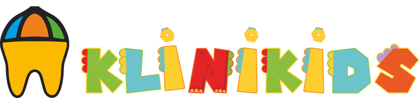

İzmit Diş Sanatı
Tüm aile için ağız ve diş sağlığı · Hangi kliniğimize gitmek istersiniz?
🧒 Çocuklar için
Çocuk Kliniği
Korkusuz, renkli ve sabırlı bir diş hekimliği. İlk muayeneden koruyucu tedavilere, her adımı oyunla anlatıyoruz.
🛡️ Koruyucu tedavi🦷 Süt dişi tedavisi🎮 Fırçalama oyunu
Çocuk Kliniği'ne gir
İzmit Diş Sanatı
Yetişkinler için
Yetişkin Kliniği
Gülüş tasarımı, implant ve protez çözümleri, ortodonti ve koruyucu bakım. Her tedavi muayene ve planlamayla başlar.
Gülüş tasarımıİmplantLamine & E-maxŞeffaf plak
Yetişkin Kliniği'ne gir